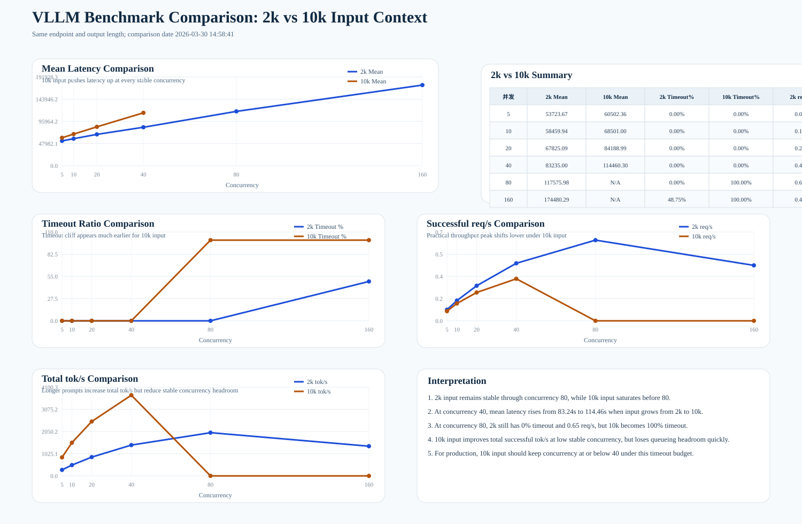

http://127.0.0.1:62272/v1/completionsQwen3-32B1024 tokenresults_fine: 输入约 2049 token, 并发 5 10 20 40 80 160results_ctx10k: 输入约 10001 token, 并发 5 10 20 40 80 1602k 输入时，最佳点出现在并发 80，成功吞吐约 0.65 req/s，timeout 为 0%。10k 输入时，最佳稳定点下降到并发 40，成功吞吐约 0.34 req/s，timeout 仍为 0%。80 时，2k 输入仍然稳定，而 10k 输入已经 100% timeout。180s timeout 口径下，长上下文请求显著压缩了可用并发窗口。| 并发 | 2k Mean(ms) | 10k Mean(ms) | 2k Timeout% | 10k Timeout% | 2k req/s | 10k req/s |
|---|---|---|---|---|---|---|
| 5 | 53723.67 | 60502.36 | 0.00% | 0.00% | 0.09 | 0.08 |
| 10 | 58459.94 | 68501.00 | 0.00% | 0.00% | 0.16 | 0.14 |
| 20 | 67825.09 | 84188.99 | 0.00% | 0.00% | 0.28 | 0.23 |
| 40 | 83235.00 | 114460.30 | 0.00% | 0.00% | 0.46 | 0.34 |
| 80 | 117575.98 | N/A | 0.00% | 100.00% | 0.65 | 0.00 |
| 160 | 174480.29 | N/A | 48.75% | 100.00% | 0.45 | 0.00 |
1w 输入 token，建议生产并发先控制在 40 以内。2k 输入附近，当前配置还能承受到 80 左右并发。1w 输入负载推到更高并发，优先检查 KV cache、batch 调度和 timeout 预算，而不是只加压客户端并发。